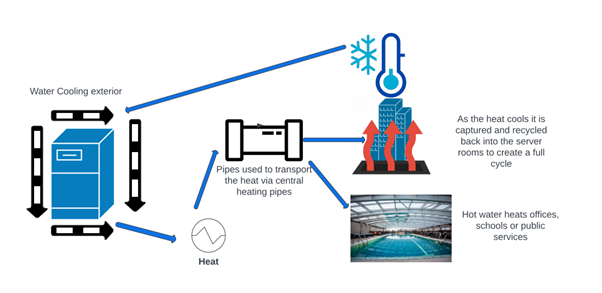

The Problem
The technologies of the future all rely on cloud hosting, AI and big data. The UK currently lacks capacity as a cloud computing superpower so UK businesses rely on oversees infrastructure which can cause problems for speed, privacy and growth.
The data centres that are necessary to provide cloud services each require vast amounts of electricity and produce significant quantities of heat in the process. Consequently, expensive cooling solutions are required which increases the carbon footprint especially if non sustainable energy sources are used.
Across the country, energy costs have risen to the point where many small businesses and social enterprises are struggling or are facing closure, with significant negative impact on local communities.

The Solution
HydroHeat has developed a solution that enables small businesses to generate revenue whilst reducing their carbon footprint as well as making substantial savings on heating costs.
Our working prototype features a small community swimming pool that has an on-site cloud computing data centre represented by a raspberry pi web server. Our protype uses a solar panel to power the data centre and to extract the heat, redirecting all of that energy to heat the swimming pool
Our research has shown that a community enterprise could save over £20,000 per year on heating costs whilst reducing reliance on fossil fuels whilst also having access to cutting edge cloud computing infrastructure on-site.
HydroHeat helps accelerate energy transition by using sustainable solar power to replace non renewable heating systems. The UK Government has recently announced £63m of funding to help leisure centres with their energy costs. They have also announced £900m of investment in building the UK supercomputing capacity of the future. HydroHeat represents a scalable, distributed model of achieving both of these goals which would kick start investment across the country, reduce carbon footprint and prevent vital community facilities from closure.
In a traditional data centre, almost all electrical energy used to power the computers is lost as heat, requiring additional energy to prevent them from overheating. A large data centre could spend over £3million on energy costs with up to 55% of that being used to the heat generated as waste.
HydroHeat solves problem by distributing small data centres around the country with each one being powered by sustainable sources (solar panels). All of the heat generated can then be repurposed to benefit social enterprises such as community swimming pools, who could then generate revenue by renting premises to data hosting companies as well as saving on their own heating bills.